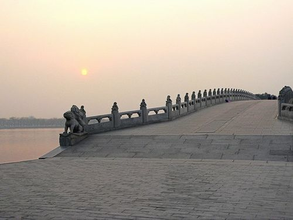
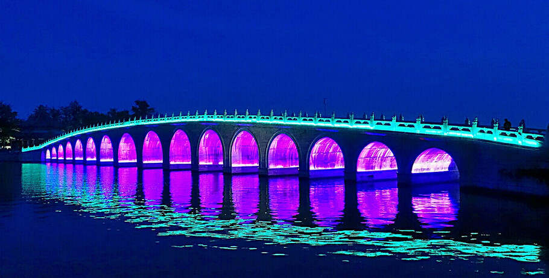

-
"十七孔橋是其著名景點之一，歷史悠久，值得一遊!"
頤和園是中國古代皇家園林，十七孔橋是其著名景點之一。這座橋建於乾隆時期，橫跨湖面，橋洞共十七個，造型獨特。影片介紹了橋的歷史、文化意義，以及頤和園的壯麗風貌，讓觀眾深入了解這一中國古代建築的瑰寶。
(攝影師於2021年10月1日在頤和園拍攝了這部充滿優美景致的影片，捕捉了園內獨特的魅力和古老建築的壯麗。透過影片，觀眾不僅能欣賞美景，更能深入感受攝影師帶來的啟發和讚嘆。)
-
這張圖片生動捕捉到了北京頤和園中壯麗的十七孔橋。橋身巍峨的拱門在靜謐的水面上映照出迷人的倒影,營造出一幅令人驚嘆的祥和景象。這座古典園林中的標誌性建築在夕陽的映照下熠熠生輝,呈現出中國傳統建築藝術的魅力。橋上遊人如織,盡情欣賞這一歷史文化瑰寶。
(2014年10月1日,攝影師在頤和園拍攝了這幅優美的景致)
-

"頤和園十七孔橋:歲月沉澱下的中國建築藝術瑰寶!"
捕捉了北京頤和園的十七孔橋美景。橋上排列著一列石獅雕塑,在夕陽餘暉的映照下,形成一幅寧靜而壯麗的景象。這座古老的園林建築在沉澱了時光的洗禮後,依舊散發著中國傳統建築藝術的獨特魅力。
(2018年9月1日,於北京頤和園拍攝)十七孔橋:時光雕琢的中國建築藝術瑰寶
-

~2019年頤和園十七孔橋七夕燈光秀:傳統文化與現代演繹交融~
2019年頤和園十七孔橋在七夕節期間盛大亮燈,橋梁上裝飾著流光溢彩的燈飾,映照在湖面上形成迷人的倒影。這座古老的橋樑在現代燈光技術的點綴下,展現出傳統文化與科技融合的絢麗景象。
2019年頤和園七夕夜,攝影師捕捉到燈光點亮十七孔橋:古老建築與現代科技的詩意交融